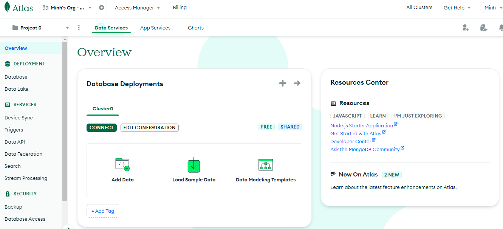
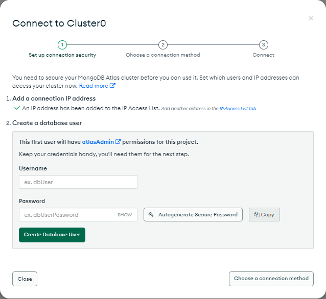
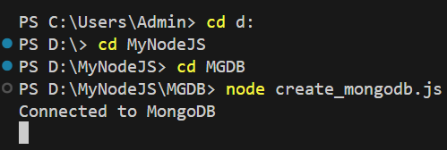

Bài 2: Viết ứng dụng đầu tiên với Node.js và MongoDB
Nội dung bài học
Cài đặt Node.js
Tải và cài Node.js và npm (Node.js package manager) tại https://nodejs.org/en/download/ , nếu đang dùng hệ điều hành Windows, chọn Windows Installer tại mục LTS.
Tải và cài Visual Studio Code tại https://code.visualstudio.com/download. Sau khi cài đặt thành công, mở Visual Studio Code và vào mục Terminal > New Terminal. Thư mục mặc định của Terminal thông thường là C:\Users\Admin>
Có thể di chuyển đến thư mục khác dùng lệnh cd. Ví dụ chúng ta sẽ di chuyển đến thư mục MyNodeJS trong ổ đĩa D, lệnh như sau:
- C:\Users\Admin> cd d: -> di chuyển đến ổ D
- D:\> cd MyNodeJS -> di chuyển đến thư mục MyNodeJS
Chạy ứng dụng đầu tiên
Trong thư mục MyNodeJS tạo tập tin myFirstNode.js có nội dung sau:
Mã yêu cầu máy tính viết "Hello World!" nếu bất kỳ ai (ví dụ: trình duyệt web) cố gắng truy cập máy tính của bạn trên cổng 8080.
Tập tin vừa tạo phải được khởi tạo bởi Node.js trước khi bất kỳ hành động nào có thể diễn ra. Từ cửa sổ Terminal, gõ lệnh:
D:\MyNodeJS> node myFirstNode.js
Enter. Lúc này máy tính đóng vai trò như một máy chủ. Truy cập http://localhost:8080
Truy cập https://glitch.com/discover và tạo cho mình một tài khoản. Nếu bạn đã có tài khoản Gmail hay Github, có thể dùng để đăng nhập (Log in) Glitch.
Chọn Discover và chọn Hello Node để bắt đầu một dự án NodeJS.
Chạy ứng dụng đầu tiên
Chọn tập tin server.js và thay đổi nội dung
Nếu bạn đang đọc tài liệu này và xem trình nhúng Glitch thì Nhấn nút View App góc phải dưới để xem kết quả.
server.js là tập tin mặc định trong Glitch. Chúng ta có thể thêm tập tin mới (ví dụ myFirstNode.js) bằng cách nhấn nút dấu "+" bên phải mục Files. Kế tiếp, cấu hình tập tin mới đến dự án bằng cách vào tập tin package.json và thay thế tên tập tin server.js bằng tên tập tin mới (myFirstNode.js) tại các vị trí có tên "server.js".
Chúng ta có thể chỉnh sửa các thông tin của dự án trên Glitch bằng cách vào mục Settings chọn Edit project details. Thay đổi tên dự án trong Project Name và viết một vài mô tả trong Description. Nhấn Save.
Cài đặt MongoDB
Chúng ta có thể cài đặt trực tiếp MongoDB trên máy cá nhân hay sử dụng dịch vụ đám mây MongoDB.
Tải MongoDB tại mongodb.com
Tham khảo hướng dẫn cài và cấu hình MongoDB tại docs.mongodb.com
Hoặc tham khảo hướng dẫn tiếng Việt tại đây và chú ý phiên bản MongoDB trong hướng dẫn là cũ (tại thời điểm viết tài liệu). Chúng ta cần cài phiên bản mới nhất của MongoDB.
Truy cập cloud.mongodb.com và đăng nhập bằng tài khoản Gmail hay Github.
MongoDB Cloud cung cấp cho chúng ta một Cluster0 miễn phí:
Nhấn nút Connect màu xanh để tạo thông tin người dùng
Nhập thông tin về Username và Password tại Create a database user. Chúng ta cần ghi nhớ thông tin này để phục vụ các bài học sau. Nhấn Close.
Viết dụng đầu tiên với Node.js và MongoDB
Chúng ta sẽ truy cập cơ sở dữ liệu MongoDB dùng NodeJS. Để thực hiện điều này trong môi trường VS Code, chúng ta cần tạo một thư mục chứa cơ sở dữ liệu tên MGDB trong thư mục MyNodeJS chúng ta đã tạo trong phần Nodejs.
Trong VS Code mở Terminal và điều hướng đến thư mục MGDB.
Cài đặt MongoDB dùng npm: npm install mongodb

Bây giờ chúng ta sẽ tạo cơ sở dữ liệu tên mydb bằng cách tạo tập tin tên create_mongodb.js trong thư mục MGDB có nội dung như sau:
Chi tiết về các lệnh sẽ được giải thích trong Bài 3 khi tìm hiểu chi tiết về MongoDB. Thực thi tập tin vừa tạo với NodeJS:
node create_mongodb.js và kết quả:
Sử dụng MongoDB dùng NodeJS trên Gitch chỉ có thể thực hiện thông qua MongoDB Cloud. Chi tiết về chủ đề này người học tự tìm hiểu thêm từ các nguồn Internet.